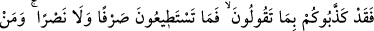

onların tercih ettiği sapıklığı onlar için yaptın ve onlarda bunu yarattın” denilmektedir.
Ehl-i sünnetin görüşü budur. Bunda tevhidi dikkate alma ve Allah Teâlâ’nın bütün
sebeplerin müsebbibi/yaratıcısı olduğunu ızhâr etmek söz konusudur.
Bu çemende kendiliğinden bittim diye kınamayın
Beni yetiştirdikleri için bitiyorum, neşv ü nemâ buluyorum
“Ve” onlar senin ezelî takdirinde “helâki hak eden” kendisinde hayır olmayan
fâsid/bozuk “bir kavim oldular.” derler.”
Râğıb der ki: “
” kesâdın aşırısıdır. “
” denildiği gibi kesâdın aşırısı
fesâda sebep olur. Bu yüzden helâk “
” ile ifâde edilmiştir.
19. (Bunun üzerine ötekilere hitâben şöyle denir:) İşte (taptıklarınız),
söylediklerinizde sizi yalancı çıkardılar. Artık ne (azabınızı) geri çevirebilir, ne de
bir yardım temin edebilirsiniz. İçinizden zulmedenlere büyük bir azâb tattıracağız!
(Bunun üzerine ötekilere hitâben şöyle denir:) İşte (taptıklarınız), söylediklerinizde
sizi yalancı çıkardılar.” Allah Teâlâ başka şeylere tapanlara şöyle buyurur: “Ey
kâfirler! Mâbudlarınız onların ilâhlar olduğu konusundaki sözünüzde sizi yalanladılar.
Ey Allah’tan başka ortaklar edinenler! “Artık ne geri çevirebilir,” hiç bir şekilde
kendinizden azâbı uzaklaştırmaya ne bizzat ne de dolaylı olarak güç yetirebilirsiniz “ne
de bir yardım temin edebilirsiniz.” Ne kendinizden ne de taptıklarınız şeylerden
başkaları vâsıtasıyla hiç bir yardım görebilirsiniz. Halbuki siz onların sizden azâbı
uzaklaştıracağını ve size yardım edeceklerini iddiâ etmiştiniz.
Ey mükellefler“İçinizden zulmedenlere” yâni Allah’a ortak koşanlara âhirette
“büyük bir azâb tattıracağız!” Bu büyük azâb, cehennem ateşi ve orada ebedî
kalmaktır. Çünkü büyük bir azâbı gerektiren şey büyük zulümden başka bir şey değildir.
En büyük zulüm ise şirktir. Âyette fâsık mü’minlere de tehdid vardır.
Allah Teâlâ sonraki âyette de müşriklerin “Bu peygambere ne oluyor da yemek yiyor
ve çarşılarda dolaşıyor?” (el-Furkân, 25/) şeklindeki sözlerine cevap vermektedir.